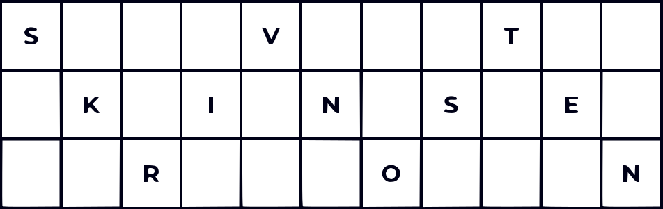

Transpozicijske metode so osnovne kriptografske tehnike, pri katerih ne zamenjujemo znake z drugimi, temveč spremenimo njihov vrstni red. Ključ določa, kako bomo črke premestili, torej gre za permutacijo položajev črk. Te metode ohranjajo pogostost črk, kar jih naredi težje razpoznavne s frekvenčno analizo. Daljša sporočila in daljši ključi dodatno otežijo razbijanje, saj povečajo število možnih permutacij. Kljub temu jih sodobni računalniki hitro dešifrirajo, zato danes niso več dovolj varne. Ostajajo pa zgodovinsko pomembne in so še vedno del nekaterih sodobnih kriptografskih algoritmov, kot je AES. (Sidhu, 2023; GeeksforGeeks, 2024)
Gre za najpreprostejšo transpozicijsko metodo. Kriptiranje poteka tako, da črke v besedilu zapišemo v cik-cak vzorcu, glede na število vrstic
(te so določene s ključem). Kriptogram dobimo tako, da črke preberemo po vrsticah.
Če imamo čistopis: "SKRIVNOSTEN" in ključ "3", bo postopek naslednji:

Kriptogram dobimo, da po vrsticah preberemo znake. Naš kriptogram: "SVTKINSERON".
(GeeksforGeeks, 2024)
Pri tej metodi za ključ izberemo besedo ali besedno zvezo, ki ne vsebuje ponovljenih črk. Vsebino čistopisa nato zapišemo v obliki tabele, kjer vsaka vrstica vsebuje toliko črk, kolikor jih ima izbran ključ. Ključ uporabimo tako, da glede na abecedno urejenost črk v njem preuredimo vrstni red stolpcev. Kriptogram nastane z branjem črk po stolpcih v določenem vrstnem redu.
V našem primeru smo za ključ uporabili besedo "KLJUČ", sporočilo, ki ga želimo kriptirati je: "SKRIVNO SPOROČILO". Sporočilo razporedimo po vrsticah tabele, kjer ima vsaka vrstica toliko znakov, kolikor črk je v ključu (5). Presledke v sporočilu in mankajoča mesta na koncu tabele prikažemo kot prazne kvadratke. Črke v ključu razvrstimo po abecedi (Č, J, K, L, U), s tem določimo vrstni red, v katerem preberemo stolpce. Kriptogram, ki ga dobimo je sledeč: "VPI R O SNOLKOROISČ".
(GeeksforGeeks, 2024)
Gre za izboljšano verzijo stolpičnega kriptograma. Njena glavna prednost je, da se kriptiranje izvede dvakrat, kar znatno oteži dekriptiranje. Postopek je podoben kot pri stolpičnem kriptogramu, le da kriptogram iz prve transpozicije postane vhod za drugo transpozicijo. Uporablja lahko isti ali dva različna ključa.
V našem primeru bomo uporabili isti ključ kot prej "KLJUČ. Vhod v drugo šifriranje bo kriptogram, ki smo ga dobili pri prvem stolpičnem kriptiranju: "VPI R O SNOLKOROISČ". Tudi tega razporedimo v tabelo po enakem postopku, s praznimi kvadratki za presledke in mankajoča mesta, ter znova preberemo stolpce v abecednem vrstnem redu črk ključa (Č, J, K, L, U). Končni kriptogram, ki ga dobimo po drugem krogu kriptiranja, je "RNR I KSV OOPOLI SOČ".
(GeeksforGeeks, 2024)
| SUBSTITUCIJSKE METODE | TRANSPOZICIJSKE METODE |
|---|---|
| Znaki v čistopisu se nadomestijo z drugimi znaki, številkami ali simboli. | Znaki v čistopisu se preuredijo glede na položaj. |
| Znak se spremeni, položaj ostane enak. | Znak se ne spremeni, spremeni se le njegov položaj. |
| Ranljiva na frekvenčne napade. | Manj ranljiva na frekvenčne napade |
| Primeri: Cezarjev kriptogram, Vigenerjev kriptogram. | Primeri: Cik-cak kriptogram, Stolpični kriptogram, Dvojni stolpični kriptogram. |
| Preprosta za razumevanje in uporabo, primerna za osnovne aplikacije. | Težja za implementacijo, varnejša za določene primere uporabe. |
(Sharma, 2022)